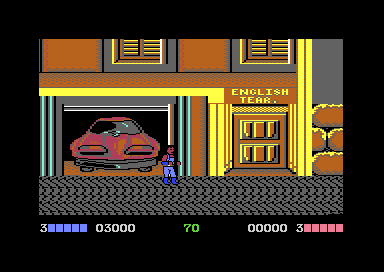

<meta charset="utf-8">
<meta name="viewport" content="width=device-width, initial-scale=1">
<title>{{title}}</title>
<link rel="stylesheet" href="../../lib/site.css">
<style>
.dd-pair{display:grid;grid-template-columns:repeat(2,minmax(0,1fr));gap:1rem}
.dd-pair figure{margin:0}.dd-pair canvas,.dd-pair img{display:block;width:100%;height:auto;image-rendering:pixelated}
.dd-controls{display:flex;flex-wrap:wrap;gap:.7rem;align-items:center}.dd-controls[hidden]{display:none}
.dd-controls select{max-width:100%}.dd-controls label{display:flex;gap:.5rem;align-items:center}
@media(max-width:650px){.dd-pair{grid-template-columns:1fr}}
</style>
<!-- tabs -->
<header class="hero"><p class="eyebrow">{{year}} · {{publisher}}</p><h1>{{title}}</h1><p class="sub">Pan across the scenery stored on the disks. The VICE capture shows where the fighter enters each scene.</p></header>
<main class="wrap">

<section id="scenes" data-part="resident"><h2>Explore the stored scenery</h2>
<p>Choose Fence to start at row 20, then move the row slider to 0 to see the scenery above the opening camera. Reset to compare with the original position. The gameplay capture stays fixed while you explore.</p>
<div class="plate">
<div class="dd-controls"><label for="dd-stage">Scene</label><select id="dd-stage"><option value="0">L0 · Garage</option><option value="1">L1 · Fence</option><option value="2">L2 · Brick wall</option><option value="3">L3 · Cliff path</option><option value="4">L4 · Entrance</option><option value="5">L5 · Interior</option><option value="6">ED · Ending</option></select>
<label for="dd-version">Disk for capture</label><select id="dd-version"><option value="to">TO · Mastertronic title</option><option value="ad">AD · Arcadia Software title</option></select>
<label><input type="checkbox" id="dd-grid"> Character grid</label></div>
<div id="dd-position" class="dd-controls">
<label>Column <input id="dd-column" type="range" min="0" max="200" value="0"> <output id="dd-column-value" for="dd-column">0</output></label>
<label>Row <input id="dd-row" type="range" min="0" max="27" value="0"> <output id="dd-row-value" for="dd-row">0</output></label>
<button id="dd-reset" type="button">Reset to opening</button>
</div>
<div class="dd-pair">
<figure id="dd-rebuilt"><h3 id="dd-map-title">L0 · Garage background</h3><canvas id="dd-map" width="320" height="192" role="img" aria-labelledby="dd-map-title"></canvas><figcaption>Stored background drawn with the character set loaded at the start of the scene.</figcaption></figure>
<figure><h3 id="dd-shot-title">L0 · Garage in VICE</h3><figcaption>Captured after the game loaded the selected scene and ran for several frames. Later scenes were reached with an assisted level change.</figcaption></figure>
</div>
<p id="dd-note" aria-live="polite"></p>
</div>
<p>The renderer at <a href="source-resident.html#6049">$6049</a> reads 40 character codes from each row, then advances by 240 bytes. A second table at <a id="dd-colour-link" href="source-l0.html#8E00">$8E00</a> supplies the colour for each code. The <a href="source-resident.html#5FD3">$5FD3</a> table sets the starting position. L1 and L3 start farther down in their stored backgrounds. The controls also show stored rows outside the gameplay camera.</p>
</section>
<section id="scenery-swap" data-part="resident">
<h2>The street can change its scenery as you scroll</h2>
<p>The <a href="source-resident.html#62FD">camera check</a> asks for different tile drawings when L0 reaches column 77 or L1 reaches column 53. The <a href="source-resident.html#60C5">transfer</a> replaces the drawings and their colour table. Later loads keep the alternate drawings that L1 brought into memory. The reconstruction above shows the character set in use at each scene’s opening.</p>
<p>The <a href="https://uta.pokefinder.org/Ultimate_Tape_Archive/Double_Dragon_%281988_Melbourne_House%29_%5B10075%5D/Extras/Instructions.pdf">manual</a> counts five stages. The loader has six numbered scene files, L0 to L5, followed by the separate ending.</p>
</section>
</main>

<script src="../../lib/c64.js"></script>
<script>
/* ddMap */
const SCENES = [
 [0x9000,11,8], [0xa2c0,11,12], [0x9000,8,5], [0x9d20,11,15], [0x9000,9,8], [0x9000,9,8]
];
function mapCell(ram, base, col, row) {
 const code = ram[base + row * 240 + col];
 return {code,colour:ram[0x8e00 + code] & 15};
}
// end of ddMap
(async function () {
 const $ = id => document.getElementById('dd-' + id), stage = $('stage'), disk = $('version');
 let generation = 0;
 async function show() {
  const i = Number(stage.value), v = disk.value, token = ++generation, title = stage.selectedOptions[0].textContent;
  $('shot-title').textContent = title + ' in VICE';
  $('shot').src = 'reference/' + v + '-scene-' + i + '.png';
  $('shot').alt = 'Original ' + v.toUpperCase() + ' game capture of ' + title;
  $('rebuilt').hidden = i === 6;
  $('grid').disabled = i === 6;
  $('colour-link').href = i === 6 ? 'source-l0.html#8E00' : 'source-l' + i + '.html#8E00';
  $('position').hidden = i === 6;
  if (i === 6) { $('note').textContent = 'The ending uses its own renderer.'; return; }
  $('map-title').textContent = title + ' background';
  try {
   const {ram,has} = await C64.load('parts/l' + i + '/listing.json');
   if (token !== generation) return;
   const [,c1,c2] = SCENES[i], font = ram.subarray(0xc800,0xd000), ctx = $('map').getContext('2d');
   const col = Number($('column').value), row = Number($('row').value);
   const base = 0x9000 + row * 240 + col;
   $('column-value').value = col;
   $('row-value').value = row;
   for (let row=0;row<24;row++) for (let col=0;col<40;col++) {
    const {code,colour} = mapCell(ram,base,col,row);
    if (!has[base + row*240 + col] || !has[0xc800 + code*8] || !has[0x8e00+code]) throw Error('This stage lacks the listing bytes for the preview.');
    if (colour & 8) C64.drawGlyphMC(ctx,font,code,8*col,8*row,1,[C64.PAL[0],C64.PAL[c1],C64.PAL[c2],C64.PAL[colour&7]]);
    else C64.drawGlyph(ctx,font,code,8*col,8*row,1,C64.PAL[colour],C64.PAL[0]);
   }
   if ($('grid').checked) {
    ctx.strokeStyle = '#ffffff55';ctx.beginPath();
    for(let x=8;x<320;x+=8){ctx.moveTo(x+.5,0);ctx.lineTo(x+.5,192);}
    for(let y=8;y<192;y+=8){ctx.moveTo(0,y+.5);ctx.lineTo(320,y+.5);}
    ctx.stroke();
   }
   $('note').textContent = '40 × 24 tiles from the 240-tile-wide map, starting at $' + base.toString(16).toUpperCase() + '. Both disks use the same scenery.';
  } catch (error) {
   if(token===generation){$('map').getContext('2d').clearRect(0,0,320,192);$('note').textContent=error.message;}
  }
 }
 const query=new URLSearchParams(location.search);
 if (/^[0-6]$/.test(query.get('scene') || '')) stage.value=query.get('scene');
 if (query.get('disk')==='ad') disk.value='ad';
 function resetPosition() {
  $('column').value = 0;
  $('row').value = SCENES[Number(stage.value)] ? (SCENES[Number(stage.value)][0] - 0x9000) / 240 : 0;
  show();
 }
 stage.addEventListener('change', resetPosition);
 $('reset').addEventListener('click', resetPosition);
 for (const el of [disk, $('grid')]) el.addEventListener('change', show);
 for (const el of [$('column'), $('row')]) el.addEventListener('input', show);
 resetPosition();
}());
</script>